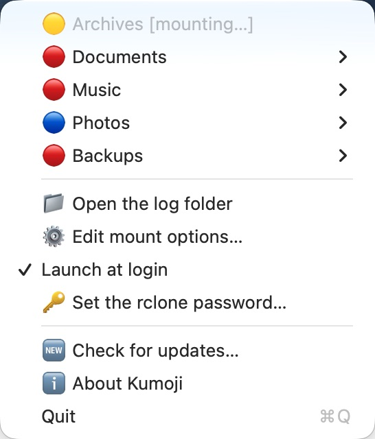

A menu bar app for mounting your rclone remotes. Supports encrypted configurations,
whose password is kept behind TouchID. Requires rclone installed and an existing
rclone configuration.
macOS 13 or later · Apple silicon and Intel · 3.2 MB
Interface in English and French
Signed and notarised by Apple
In the menu bar
Every remote, its state at a glance, one click to mount it. A submenu opens
the volume in the Finder or unmounts it.
One fingerprint, then nothing
Your rclone configuration password stays in memory for as long as you decide.
Mount ten volumes without thinking about it.
No macFUSE
No kext, no system extension, no restart. Kumoji goes through the NFS client
macOS already ships with.
One fingerprint for a whole session

Blue: mounted. Red: available. Yellow: the mount is under way.
An encrypted rclone.conf asks for its password on every command. Wrappers
that launch rclone on a click restart a fresh process each time: one authentication per
mount, and the day is gone.
Kumoji stays in memory and holds the secret itself. One fingerprint on the first mount,
then none at all until the delay expires — eight hours by default,
adjustable, including to “never” and to “every time”. A menu entry, Lock now,
forgets it immediately when you leave your desk.
Encrypted or not, it adapts
Kumoji reads the header of your rclone.conf to find out whether it is
encrypted. If it is not, it asks for nothing: no password, no
fingerprint — rclone would ignore it anyway, and the two menu entries concerning it
disappear.
If it is, and no password is stored yet, it asks for one — and checks it
against your configuration before putting it in the keychain. A password that
decrypts nothing never gets in. And the day you change your configuration's password,
Kumoji tells you instead of failing in silence.
It is waiting for you at login
A toggle in the menu, and Kumoji settles into the menu bar as soon as your session
opens. It mounts nothing for all that: the cloud is there, empty, and you mount what
you need.
Nothing to install into the system
Almost every tool of this kind relies on macFUSE: a system extension to authorise from
recovery mode at startup, to reinstall on every major macOS upgrade, and which brings
the system down when it crashes.
Kumoji does not need it. rclone can expose a remote through a local NFS server, and
macOS has been able to mount NFS forever. No kext, no system extension, no
restart — the volume appears in the Finder like any network disk.
The menu never authenticates you for nothing
Opening the menu, seeing what is mounted, unmounting a volume: none of these ever ask
for a fingerprint. Kumoji caches the list of your remotes — their names and
paths, never their tokens — and so has nothing to decrypt in order to draw its menu.
The state shown is the one the kernel sees, not a guess. And it is read without ever
contacting the server: a remote mount that has become unreachable freezes most tools;
here it does not stop the menu from opening.
When a mount fails, you know it
A remote that refuses to mount opens an alert carrying the last lines of
rclone's log — the exact reason, without having to go looking for it. Each
remote keeps its own log, openable from the menu.
Write caches are only cleared after a verified unmount, once no rclone process
survives: in full cache mode, they hold changes that have not been sent yet.
Set by a file, not by checkboxes
The mount options live in a text file that the menu opens for you. They are re-read on
every mount: no restart to try something else.
Two sets of options: those passed to every remote, and those reserved for the ones you
know only change through this mount — their caches can then be far more aggressive. A
remote joins that category through its name, by suffixing it -exclusive.
Technical remotes, the ones that exist only to encrypt another, are hidden from the
menu the same way.
Your password does not leave the machine
It is stored in the keychain, protected by TouchID, and marked as never to join the
iCloud keychain nor follow Migration Assistant. On a second Mac, you type it again:
that is the price of the guarantee.
The rclone processes Kumoji launches receive an environment built for them — they do
not inherit your session's secrets. Nothing goes to Kumoji, nor to anyone else: the
application only talks to rclone and to the kernel.
What Kumoji does not do. It does not replace
rclone, which must be installed
(brew install rclone) and configured: creating and setting up a remote
remains the job of rclone config. It mounts nothing by itself at
login: it settles there, ready, and mounting stays a deliberate act.
Reports go on GitHub. Two forms guide you: one for what does not work, one for what is
missing. A few questions are asked — version, backend type, mount log — because they
nearly always save a round trip.